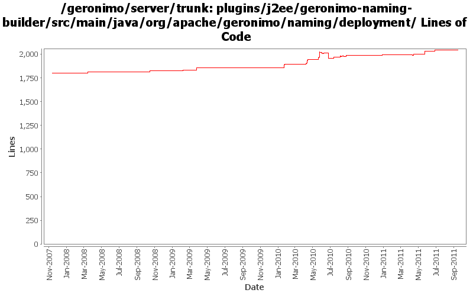

[root]/plugins/j2ee/geronimo-naming-builder/src/main/java/org/apache/geronimo/naming/deployment
 jsr88
(1 files, 136 lines)
jsr88
(1 files, 136 lines)

| Author | Changes | Lines of Code | Lines per Change |
|---|---|---|---|
| Totals | 107 (100.0%) | 902 (100.0%) | 8.4 |
| djencks | 60 (56.1%) | 524 (58.1%) | 8.7 |
| gawor | 23 (21.5%) | 176 (19.5%) | 7.6 |
| xuhaihong | 16 (15.0%) | 119 (13.2%) | 7.4 |
| genspring | 6 (5.6%) | 77 (8.5%) | 12.8 |
| jdillon | 2 (1.9%) | 6 (0.7%) | 3.0 |
Update codes due to getInjectionTargets return value type changed to Set
8 lines of code changed in 4 files:
GERONIMO-6022 Support use the @Resource(name="java:global/env/abc") for environment entry injection
47 lines of code changed in 3 files:
if the type in @resource annotation is Object.class, return the filed type directly.
8 lines of code changed in 1 file:
deprimitivize type when processing the resource type.
2 lines of code changed in 1 file:
consider the @resource annotation of field/method when infering the resource Type.
47 lines of code changed in 1 file:
The cause/solution turned out to be the same to trunk@642366, don't process env-entry already processed by other builders
9 lines of code changed in 1 file:
No function change, refract codes a bit
34 lines of code changed in 1 file:
more generic normalization for name to construct the abstractNameQuery.
2 lines of code changed in 1 file:
Fix deployment errors in full profile caused by searching jndiName as the gbean name.
9 lines of code changed in 1 file:
Configure the class name for lifecycle methods, need to check some duplicate annotation scanning
15 lines of code changed in 1 file:
Additinal fix for DataSource injection via @Resource.name
1 lines of code changed in 1 file:
Annotation processing improvements and support for @EJB.lookup
17 lines of code changed in 2 files:
GERONIMO-5518: Support injection of primitive types using @Resource annotation
21 lines of code changed in 2 files:
jndi normalization fixes
3 lines of code changed in 2 files:
GERONIMO-5066 Fix a lot of problems with jndi including wrong finders and inconsistent adding of injections
46 lines of code changed in 4 files:
inferring the type of an injection needs to look at possible setters as well as fields
17 lines of code changed in 1 file:
GERONIMO-5190 use openejb-jee jaxb tree for spec dds
119 lines of code changed in 14 files:
GERONIMO-5346 improve type compatibility checing to allow subclasses
7 lines of code changed in 1 file:
GERONIMO-5025, GERONIMO-5117. Make jndi supported directly by Modules and straighten out which contexts are shared when.
28 lines of code changed in 4 files:
GERONIMO-5346 infer jndi entry type from injections, resources
2 lines of code changed in 2 files:
GERONIMO-5346 infer jndi type from injection target, for env-entries
110 lines of code changed in 2 files:
If the purpose of an xml env-enty is to suppress injection, don't require the type to be specified.
56 lines of code changed in 1 file:
GERONIMO-5330 Don't trim env-entry values
22 lines of code changed in 2 files:
GERONIMO-5025 support for jndi configuration in application.xml (part 2)
3 lines of code changed in 1 file:
GERONIMO-5232: Support @Resource.lookup for env-entry, resource-ref, resource-env-ref, and message-destination-ref. Also fixes java:app jndi namespace
11 lines of code changed in 2 files:
GERONIMO-5251: Support environment entires of type Class or Enum
77 lines of code changed in 1 file:
GERONIMO-5150 type safe shared data in EARContext
22 lines of code changed in 8 files:
GERONIMO-5232: Update DD with @Resource.lookup attribute
10 lines of code changed in 1 file:
GERONIMO-5057 Use those xmlbeans generated by JAVA EE 6 schema files
15 lines of code changed in 7 files:
GERONIMO-5030: Initial refactoring of some of the module deployment code to support deployment of Bundles. Also, implemented rfc66 extender that can actually deploy WABs with simple servlets and jsps.
8 lines of code changed in 1 file:
GERONIMO-5025 Initial work on ee 6 scoped jndi stuff. Minimal testing so far
38 lines of code changed in 3 files:
GERONIMO-5004 axis 1 osgi integration including test jetty server
10 lines of code changed in 3 files:
fix problem in EarConfigBuilder when constructing sub-configurations for wars. Rename DeploymentContext.getBundle to getDependencyBundle to try to make it clearer that it is temporary and not always available. Start updating pluto/console stuff for pluto 2.
2 lines of code changed in 2 files:
geronimo-j2ee-builder and geronimo-naming-builder compile. There seem to be packaging problems in geronimo-j2ee
7 lines of code changed in 7 files:
GERONIMO-3954 allow overrides of env-entry values in geronimo plan
25 lines of code changed in 1 file:
GERONIMO-4531, GERONIMO-4523 Simplify builder collections. Make security principal-role mappings independent of the application
10 lines of code changed in 2 files:
fixes for resource injection of simple env. entry types (GERONIMO-4361)
18 lines of code changed in 2 files:
(GERONIMO-3985) Use SLF4J as the primary logging facade for Geronimo
6 lines of code changed in 2 files:
Add sort priority order to NamingBuilder/NamingBuilderCollection. Also, updated AdminObjectRefBuilder to ignore already processed entries (i.e. check if the entry already is bound in the jndi context map). (GERONIMO-3909)
10 lines of code changed in 3 files:
GERONIMO-3742 Split up namespace upgrades into the modules that need them
0 lines of code changed in 2 files:
(2 more)